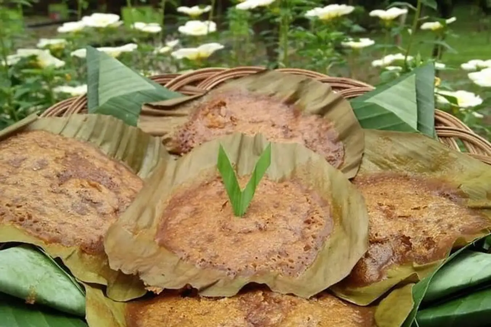
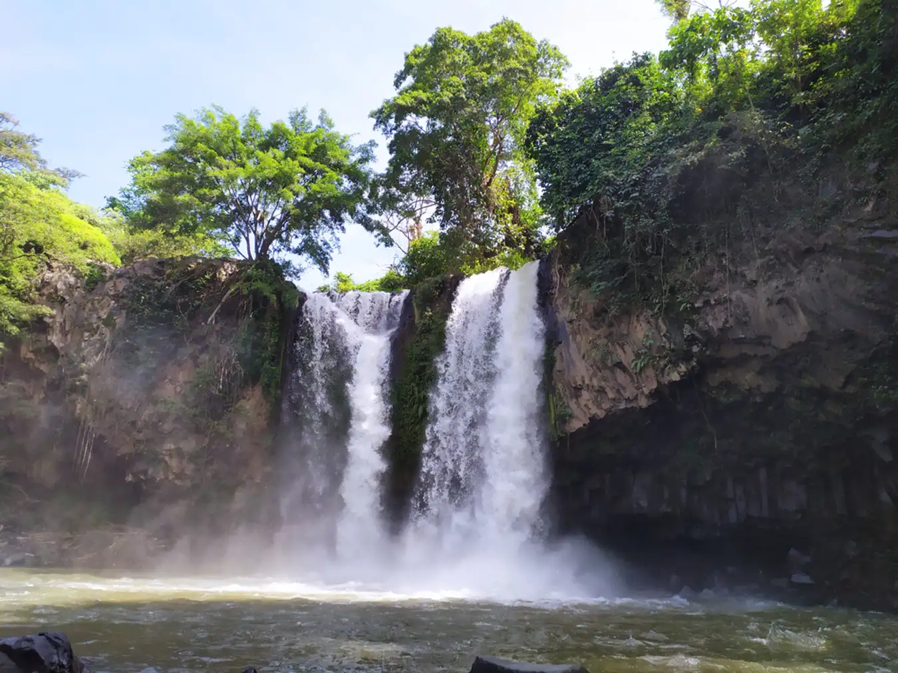
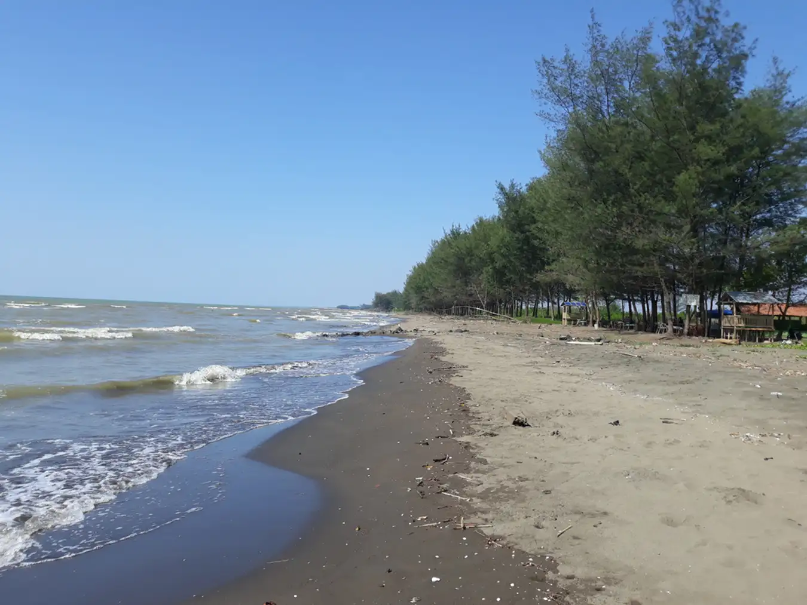
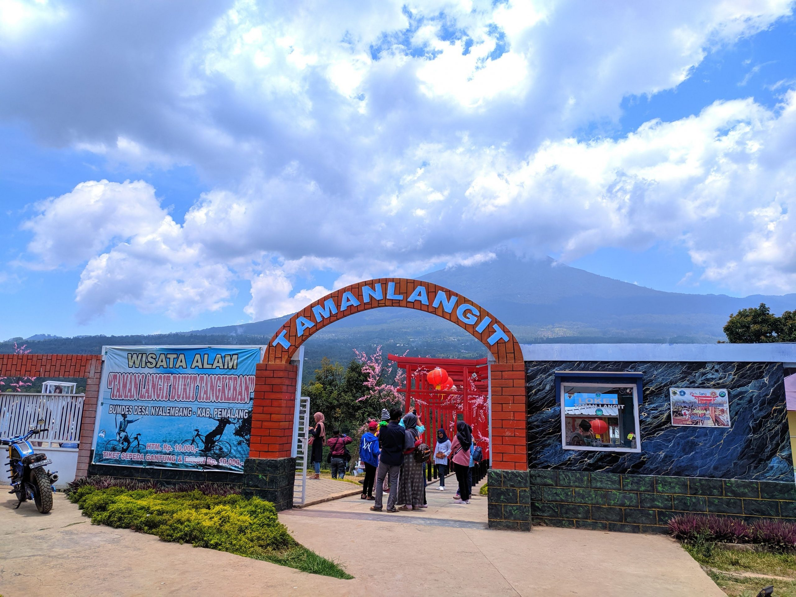
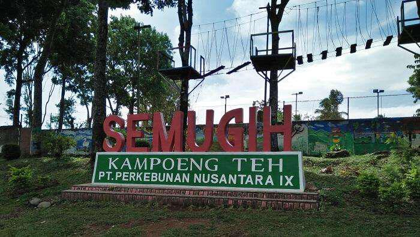

Sejarah Pemalang
Sejarah Kabupaten Pemalang terbentang sejak zaman Prasejarah, Mataram
Islam, hingga penjajahan Belanda sampai saat ini. Bukti yang
menunjukkan Pemalang sudah dihuni sejak masa Prasejarah melalui
beberapa penemuan arkeologis di wilayah tersebut. Salah satunya
penemuan patung Ganesha serta situs kuburan di Desa Lawangrejo dan
Desa Banyumudal. Sementara pendirian Kabupaten Pemalang sendiri
dikaitkan dengan runtuhnya Kesultanan Pajang. Konon sejumlah bangsawan
Pajang banyak yang melarikan diri ke arah barat untuk mencari
penghidupan yang lebih layak. Beberapa di antara mereka ada yang
sampai ke daerah yang kini masuk wilayah Kabupaten Pemalang. Salah
satu bangsawan Pajang itu bernama Raden Sida Wini. Dia membuka daerah
Pemalang dan menobatkan diri sebagai Adipati di sana. Pengakuan
masyarakat terhadap pemerintahan di Pemalang ini terjadi pada tanggal
22 Januari 1575. Namun sebagian sumber lain menyebutkan bahwa
bangsawan Pajang yang membuka daerah Pemalang bernama Pangeran Benawa.
Pengeran Benawa adalah putra pendiri Kesultanan Pajang yang bergelar
Sultan Hadiwijaya.
Dengan demikian, Pangeran Benawa sebenarnya berstatus sebagai Putra
Mahkota Pajang, yang berhak atas tahta ayahnya. Kepergian Pangeran
Benawa ke Pemalang juga atas perintah dari ayahnya yaitu Sultan
Hadiwijaya. Saat itu Sultan Hadiwijaya memerintahkan Pangeran Benawa
untuk membuka daerah Pemalang. Namun sebelumnya Pangeran Benawa
diminta untuk mengambil keris pusaka dari Kesultanan Banten. Pengeran
Benawa menuruti perintah ayahnya. Sepulang dari mengambil keris, dia
pun menuju ke satu desa di wilayah Pemalang. Di sana, Pangeran Benawa
menggoreskan kerisnya ke cabang pohon. Wilayah ini kemudian disebut
Panggarit. Panggarit berasal dari dua kata, pertama pang yang berarti
cabang, dan garit yang berarti goresan. Hingga saat ini daerah itu
tetap dikenal dengan nama Desa Panggarit, serta terdapat petilasan
Pangeran Benawa yang disebut Jambandalem.
Kesenian di Pemalang
Pemalang memiliki banyak budaya dan kesenian yang sampai saat ini
masih dilestarikan. Budaya dan kesenian tersebut merupakan warisan
sejak jaman nenek moyang dahulu. Budaya dan seni tersebut muncul sejak
jaman kerajaan yang memiliki maksud dan tujuan baik pada masa itu.
Secara turun temurun budaya tersebut diwariskan kepada generasi
selanjutnya dengan harapan akan terjaga dengan baik.
- Baritan
Baritan atau sedekah laut adalah prosesi melarung Jolen ke tengah
laut yang dilaksanakan para nelayan sebagai upacara rasa syukur atas
hasil usaha menangkap ikan di laut. Sedekah laut diselenggarakan
tiap tahun sekali pada Maulud, setiap Selasa atau Jumat Kliwon.
Sebelum upacara pelarungan, diadakan tirakatan bersama yang dihadiri
para nelayan, tokoh masyarakat setempat dan para pejabat terkait
dengan mengambil lokasi di Tempat Pelelangan Ikan. Pembacaan doa dan
tahlil menyertai upacara ini dengan maksud agar pelaksanaan upacara
ini dapat berjalan lancar, selamat dan tidak menyimpang dari aturan
agama.
- Sintren
Sintren merupakan kesenian rakyat yang cukup populer di wilayah
Karesidenan Pekalongan terutama di kalangan masyarakat pantura.
Sintren konon berasal dari legenda Sularsih-Sulandono. Sulandono
adalah putera ari pasangan suami-istri Joko Bahu dan Ratnasari yang
menurut kisah adalah pendiri Kota Batang, Pekalongan dan wilayah
sekitarnya. Sintren menggambarkan perjalanan hidup dan kesucian
seorang gadis yang diperankan seorang gadis belia yang masih suci,
belum akil-balik dan tidak pernah terjamah tangan lelaki.
- Krangkeng
Kesenian tradisional ini dikenal masyarakat Pemalang sejak tiga abad
silam. Berawal dari peristiwa penyerbuan Batavia oleh laskar
Mataram. Pemalang yang saat itu termasuk dalam wilayah Mataram
membantu laskar Sultan Agung dengan mengirim prajurit-prajurit
terbaiknya. Cara menghasilkan prajurit tangguh saat itu ialah
melatih para pemuda dengan ilmu kanuragan dan olah keprajuritan.
Caranya setiap latihan olah kanuragan selalu diiringi musik atau
tetabuhan. Kegiatan latihan olah kanuragan yang diiringi musik kini
masih terus berlangsung, bahkan kian meluas. Materi yang ditampilkan
kian berkembang dan diperkaya berbagai jenis ketangkasan lainnya
seperti atraksi kekebalan tubuh dan ketrampilan akrobatik. Olah
kanuragan kini telah beralih fungsi menjadi sebuah kegiatan kesenian
dan tontonan yang menarik. Inilah cikal bakal lahirnya kesenian
krangkeng.
- Kuntulan
Kesenian ini mulai dikenal masyarakat Pemalang pada sekitar awal
abad 20 yaitu pada saat di tanah air banyak muncul pergerakan
kebangsaan. Tokoh-tokoh masyarakat Pemalang saat itu tak mau
ketinggalan ikut dalam kancah perjuangan nasional. Dibentuklah
perkumpulan bela diri, khususnya pencak silat. Kegiatan bela diri
ini ketika itu selalu diiringi rebana dan pukulan bedug serta
dikumandangkan pula doa-doa salawat Nabi sehingga terkesan sebagai
kegiatan kesenian dan keagamaan. Setelah kemerdekaan kegiatan ini
yang kemudian di -kenalkan dengan nama kuntulan tetap berlangsung
dan berubah dari alat perjuangan menjadi sarana hiburan. Kesenian
ini biasanya dipentaskan para acara peringatan hari besar nasional,
hajatan atau pun menyambut tamu resmi. Kesenian kuntulan tampak
menarik karena memadukan jurus-jurus bela diri yang nampak artistik,
demonstrasi akrobatik dan keindahan musik rebana dan bedug.
Makanan Khas Pemalang
Jangan sampai terlewat, yuk coba beberapa kuliner khas Pemalang
berikut ini yang sayang jika dilewatkan!
- Kue Kamir

Kue kamir merupakan makanan kering khas Pemalang. Kue kamir
sendiri dibuat dari perpaduan aneka bahan seperti mentega, pisang
ambon, telur, tepung terigu, dan tape singkong sebagai raginya.
Kue ini berbentuk bulat pipih dan dipanggang hingga berwarna
kecokelatan dalam proses pembuatannya. Kue ini cocok dijadikan
oleh-oleh saat Anda berkunjung ke Pemalang. Untuk mendapatkan kue
kamir, Anda bisa mengunjungi Toko Kamir Bu Amanah yang berlokasi
di Jalan Semeru Gang Melati RT 05 RW 19, Mulyoharjo, Kecamatan
Pemalang, Kabupaten Pemalang, Jawa Tengah. Toko ini dibuka setiap
hari, mulai dari jam 5 pagi hingga pukul 8 malam.
- Nasi Grombyang

Makanan khas Pemalang berikutnya adalah nasi grombyang.
Adapun,nasi grombyang khas Pemalang ini punya tampilan dan
penyajian yang mirip dengan nasi rawon dari Jawa Timur. nasi
grombyang khas Pemalang ini berisi seporsi nasi yang kaya akan
kuah rempah dengan tambahan daging sapi atau daging kerbau.
Grombyang punya arti bergoyang-goyang atau mengapung di permukaan
dalam bahasa Jawa. Hal ini karena komposisi kuah lebih banyak
dibandingkan nasi pada makanan khas Pemalang yang satu ini. Karena
itu,nasinya terlihat mengapung dan bergoyang-goyang. Di tahun 2021
kemarin, nasi grombyang khas Pemalang telah ditetapkan sebagai
warisan budaya tak benda oleh Kemendikbud RI. Adapun, warung
terpopuler untuk mencicipi makanan ini adalah warung nasi
grombyang Pak H. Warso yang berlokasi di Jalan RE Martadinata,
Pelutan, Kecamatan Pemalang, Kabupaten Pemalang, Jawa Tengah.
warung nasi grombyang Pak H. Warso ini buka setiap hari, mulai
dari jam 10 pagi hingga pukul 9 malam.
- Tahu Pletok

Tahu pletok merupakan makanan khas Randudongkal Pemalang. Dalam
membuatnya, tahu dibalik terlebih dahulu supaya bagian dalam tahu
berada di luar sebelum diberi bumbu. Proses inilah yang membuat
nama camilan ini menjadi tahu pletok. Adapun, bumbu di bagian
dalam tahu pletok sebenarnya hanyalah garam dan bawang putih.
Setelah diberi bumbu tersebut, barulah tahu pletok digoreng hingga
garing dan renyah dimakan. Rasa tahu pletok sendiri cenderung
gurih dan asin. Karena itu, biasanya tahu pletok disantap bersama
cabe rawit hijau. Sedangkan untuk kemasan tahu pletok biasanya
menggunakan anyaman bambu yang disebut besek.
- Apem Comal

Selain tahu pletok, apem comal merupakan makanan khas Randudongkal
Pemalang lainnya. Apem comal sendiri adalah roti yang dibuat dari
perpaduan gula merah dan tepung terigu. Cita rasa dari apem comal
cenderung manis dan gurih. Pembuatan apem comal masih dilakukan
dengan cara tradisional, memakai anglo. Adapun, kemasan dari apem
comal sampai sekarang hanya memakai daun pisang. Anda bisa
mendapatkan apem comal di Pasar Comal Pemalang yang buka setiap
hari, mulai dari jam 4 sampai 6 pagi.
Wisata di Pemalang
- Curug Bengkawah

Lokasi : Jl. Sikasur Simpur, Kec. Belik, Kab. Pemalang, Jawa
Tengah
Salah satu wisata di Pemalang yang lagi hits adalah Curug
Bengkawah. Air terjun yang terletak di ujung areal persawahan Desa
Sikasur ini memiliki tinggi sekitar 15 meter dengan sungai yang
mengalirkan dua aliran air sangat deras. Wisata yang berada di
kaki Gunung Slamet ini tidak hanya menawarkan kemegahan air terjun
saja, namun juga memfasilitasi pengunjung yang ingin menguji nyali
dengan wahana arung jeram. Dengan rute sepanjang 7 km, kamu pasti
akan sangat puas menikmatinya. Wisata ini buka dari pukul 07.00 -
17.00 WIB dengan harga tiket masuk Rp6.000 per orang. kamu juga
bisa menyewa perahu karet untuk 5 orang penumpang dengan harga
mulai dari Rp150.000.
- Pantai Widuri

Lokasi : Desa Widuri, Kec. Widuri, Kab. Pemalang, Jawa Tengah
Membahas wisata Pemalang belum lengkap jika tidak menyebutkan
Pantai Widuri. Pantai yang menjadi objek wisata andalan keluarga
ini selalu ramai pengunjung terlebih saat akhir pekan. Pantai ini
memiliki pasir berwarna cokelat dengan deburan ombak yang tenang.
Wisata ini buka setiap hari selama 24 jam dengan harga tiket
Rp3.000 per orang. Akses jalan ke pantai juga mudah, sehingga bisa
dijangkau dengan segala macam kendaraan. kamu bisa menikmati
keindahan pantai ini dengan bermain air dan juga wisata kulineran.
- Taman Langit Pulosari / Bukit Tangkeban

Lokasi : Nyalembeng, Pulosari, Pemalang, Jawa Tengah
Taman Langit atau biasa disebut juga Bukit Tangkeban ini merupakan
lokasi wisata di Pemalang yang favorit saat ini. Di Taman Langit
Pulosari tersedia jembatan kaca yang kekinian dengan panorama
Gunung Slamet yang gagah. Sangat banyak aktivitas seru yang bisa
kamu lakukan ketika di Bukit Tangkeban atau Taman Langit, seperti
Bermain ATV, Mencoba Sky Bike, berfoto dan menikmati sunrise dan
sunset. Fasilitas yang ada di Taman Langit pun sangat lengkap,
apalagi di sana juga terdapat café, sehingga membuat kamu betah
berlama – lama di lokasi tersebut.
- Kampoeng Teh Semugih

Lokasi: Perkebunan Nusantara IX, Jl. Raya Moga - Pulosari No. Km.
02, Simadu Barat, Banyumudal, Kecamatan Moga, Kabupaten Pemalang.
Beranjak dari wisata bukit, kini saatnya membahas wisata dengan
tema pegunungan yang ada di Pemalang. Pertama adalah Kampoeng Teh
Semugih yang berlokasi sekitar 2 km dari pusat kecamatan Moga.
Buka setiap hari sejak pukul 07.00 - 21.00 WIB, wisata ini
seringkali digunakan sebagai lokasi rekreasi dan touring berbagai
komunitas. Selain karena tiket masuk yang sangat terjangkau,
wisata ini juga menawarkan pemandangan yang bisa menyejukkan mata.
Dengan harga tiket masuk Rp5.000 saja, kamu sudah bisa
mengabadikan momen dengan panorama yang luar biasa. Tak hanya itu,
kamu juga bisa menikmati berbagai wahana lain, seperti camping
area, wahana edukatif, dan cafe estetik dengan sedikit tambahan
biaya.